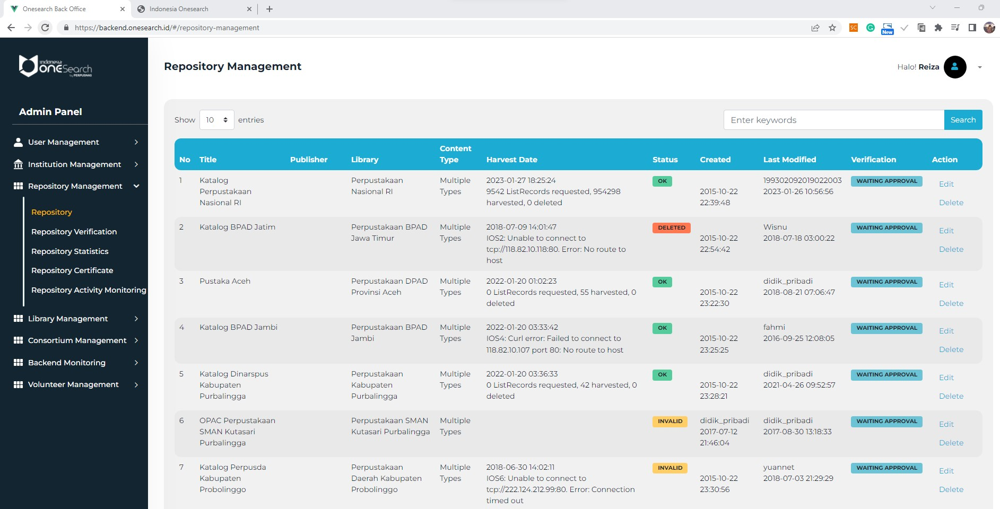
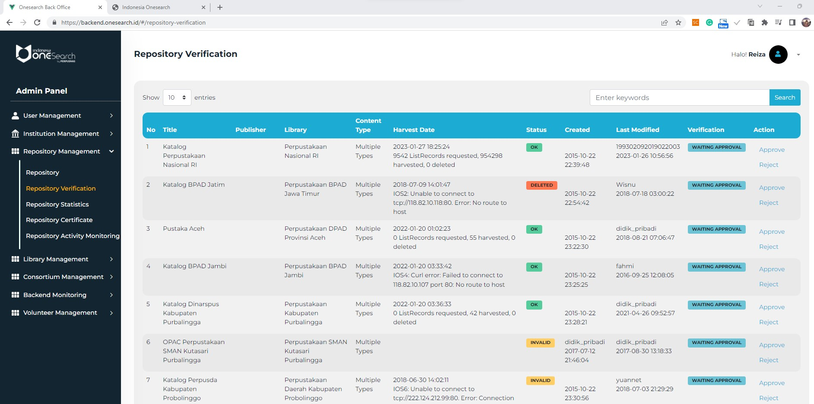
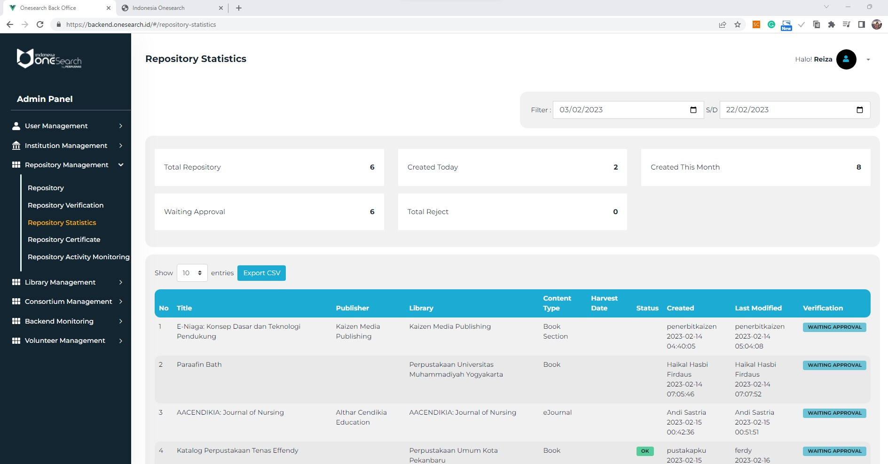
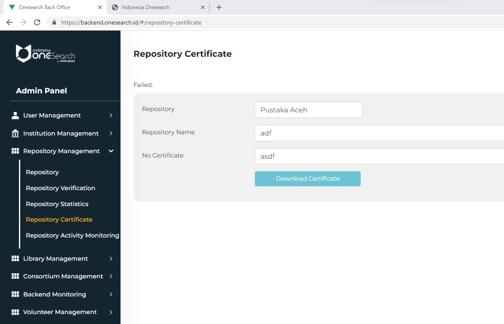
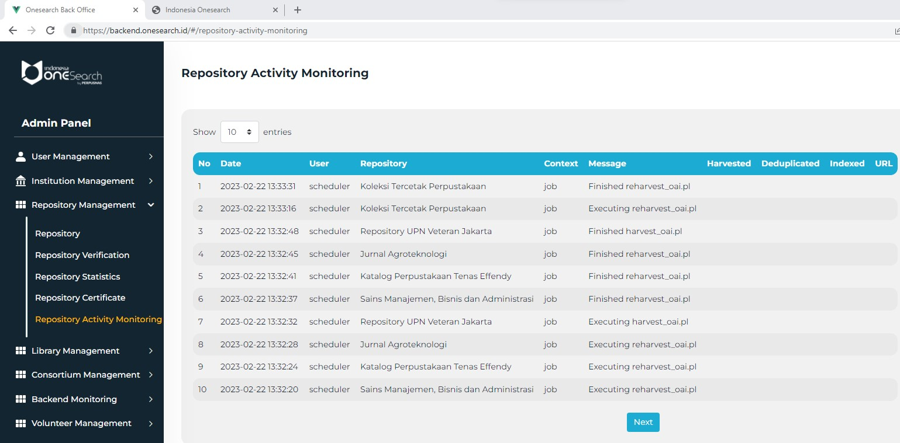

C. Repository Management
1. Repository

2. Repository Verification

3. Repository Statistics

Ketika tombol Simpan ditekan, proses dijalankan yang ditunjukan di menu monitoring dan status.

4. Repository Certificate

5. Activity Monitoring
